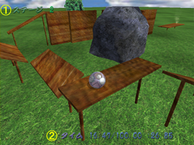
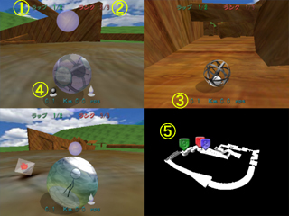
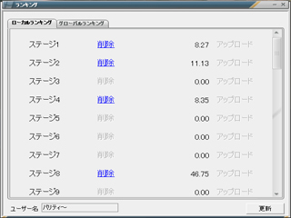
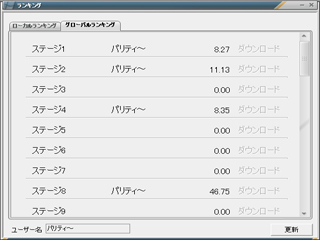
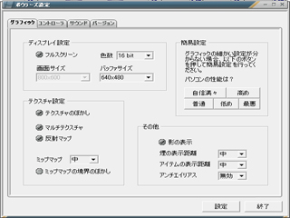
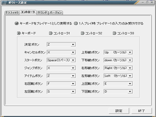
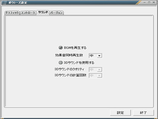

このたびは、「ボウラーズ」をプレイしていただきありがとうございます。 このゲームをより楽しく遊んでいただくために、マニュアルは一通り目を通しておいていただけるとうれしく思います。
|
|
・本作品に関する全ての著作権は、GenkiProjectが保持します
・本作品は、特定の個人への配布のみ許可し、不特定多数への配布は許可しない
・本作品に対し、解析や改造、リバースエンジニアリングを行ってはならない
・本作品は。全ての環境で動作するとは限りません。 環境により、不具合が生じる可能性があります。
・この作品を使用した上で発生したいかなる損害も、一切責任を負いません
・本作品の仕様は、予告なしに変更することがあります
| 操作 | キーボード | コントローラ |
| 決定 | Zキー | ボタン1 |
| キャンセル | Xキー | ボタン2 |
| スタート | スペースキー | ボタン3 |
| ジャンプ | Xキー | ボタン1 |
| アイテム | Zキー | ボタン2 |
| カーソル,キャラ移動 | 方向キー | 方向キー(軸1) |
| カメラ移動 | D,E,F,Sキー | ボタン5,6(軸2) |
| 強制終了 | ESCキー |
このゲームには３つのモードがあります。
①ステージモード
このゲームのメインとなるモードで、一人用のステージでゴールを目指してひたすらクリアしていきます。
全てのステージをクリアすることが最終目的となります。
②バーサスモード
このモードでは、複数人数での対戦を行うことができます。
バーサス用のコースやキャラクターは、ステージをクリアしていくことによって出現します。
このモードに目的はありません。ハイスコアを狙ったり、バトルに盛り上がってください。
(※このモードはステージをある程度クリアしないと出現しません)
③リプレイモード
このモードでは、一度クリアしたステージの最短記録リプレイを見ることができます。
ステージモードでの画面の見方
 ①ステージ番号 現在挑戦中のステージ番号を表示します②タイム 「経過時間 / 制限時間 : ハイスコア」の形式で、タイム情報が表示されますバーサスモードでの画面の見方
 ①ラップ情報 現在のラップ数（周回数）が表示されます②ランク情報 対戦人数と、自分自身の現在ランクを表示します③速度情報 現在の移動速度(Km)、回転速度(rps)を表示します④アイテム 左側に表示されているアイテムは所持アイテムで、現在使用することのできるアイテムです。
右側に表示されているアイテムは効果アイテムで、現在そのアイテムの効果を受けていることを表します。⑤コースマップ 現在プレイ中のコースマップを表示します。マップ上には、それぞれのプレイヤーの位置情報が表示されています
バーサスモードではプレイヤーごとにキャラクターを選択して使用することが可能ですキャラクター紹介
|
| このゲームのメインキャラであり、ステータスは標準的 |
|
| メインキャラに比べると、若干速度が速く加速が遅い |
|
| 非常に軽く操作性のいいキャラであるが、ジャンプ力がなく、速度が遅い |
|
| ジャンプ力、速度、重さは他に勝るが、加速が非常に遅い |
バーサスモードの多人数プレイ時では、さまざまなアイテムを使用することによって自分を強化したり相手を妨害したりすることができます。アイテムの紹介
|
|
ファイアー使用すると、一定時間ファイアーを身にまといながら、猛スピードで転がることができます |
|
|
ウォーター自分以外の全プレイヤーにウォーターの効果をかけます。ウォーターの効果がかかったプレイヤーは、まるで水中にいるように減速します |
|
|
ショット使用すると、一番近くにいるプレイヤーをロックオンし、数秒後に発射して他のプレイヤーの妨害をします |
|
|
キャノン使用すると、まるで大砲で飛んだかのように進行方向に加速することができます |
|
|
ボム使用すると、その場に爆弾を放出し、一定時間すると大爆発を起こして他のプレイヤーの妨害をします |
|
|
ホーミングボム使用すると、その場に爆弾を放出し、放出された爆弾は一番近くにいるプレイヤーに向かって誘導していきます。プレイヤーに当たるか、壁に正面から当たったときや、一定時間が経過したときに爆発します |
このゲームの難易度は高めのため、ゲーム攻略のヒントやテクニックを紹介します
・ジャンプでカーブ
カーブで滑っているとき、ジャンプをすることによって一瞬の摩擦力を上げることができ、回転方向へ進むことができる。
逆に、高いところからの着地のときも同じことが言えます・壁上り
壁に向かって突進してジャンプ！壁にぶつかった瞬間にもう一度ジャンプ！！これを繰り返して壁を登ることも可能です。ショートカット時には必要な技術ですね・アイテム効果無効化
ウォーターなどの効果攻撃を受けた場合、ファイアーなどの効果アイテムを使用することによって効果を上書きすることができる。これをうまく利用すればウォーターなんて怖くない！
逆に相手のファイアーにウォーターを上乗せしてしまうことも可能です・いただきファイアー
ほかのプレイヤーがファイアー状態のときに体当たりをしてみよう。何が起こるかな？？・ホーミングボムの撃墜
アイテムの中でも特に厄介なのがホーミングボム。
しかし、ショットをうまく使えば撃墜することも可能！
相手がホーミングボムを持っていたら、ショットは使わずにとっておくと便利ですね
その他にもきっとたくさんの技があるはずです。是非挑戦してみたください！
ランキングプログラムを利用すると、ステージごとのクリア時間を、全世界で競うことができます。
また、クリア時間だけでなくリプレイデータのアップロードやダウンロードも可能です
①スコアの消去
クリアしたステージのタイムやリプレイを、ステージごとに消去することができます
(※クリア情報は消えません)②スコアのアップロード
自分のクリアタイムが全世界で最も早い場合、自分の名前とタイム、リプレイデータをアップロードすることがで (アップロードの際にはユーザー名を入力する必要がありますきます)③スコアのダウンロード
全世界で最も高速なリプレイデータをダウンロードすることができます。
(ステージモードでは、そのステージを一度はクリアしている必要があります)
ランキングには、ローカルランキング、グローバルランキングの２種類があります・ローカルランキング画面
この画面では、自分自身のクリアデータの管理を行います。
データの削除や、アップロードを行うことができます。
・グローバルランキング画面
この画面では、全世界のクリアデータを観覧することができます。
データのダウンロードを行うこともできます。

ゲーム設定の説明
設定が少々専門的なので、あまり一般的でなく分かりづらい項目について説明します
◆グラフィック設定
・簡易設定について
設定が複雑なので、意味がよく分からない人はこのボタンを押すことにより簡単に設定を行うことができます。・バッファサイズ
バッファとは、3Dなどを書き込む板のようなものを表します。
実際に画面に表示されるときは、画面サイズにバッファを拡大縮小して表示するため、バッファサイズが画面サイズより小さいとぼやけた感じになってしまいます・テクスチャのぼかし
(必要マシンスペック：低)
物体に描かれている絵の事を「テクスチャ」と呼びますが、この機能を有効にするとテクスチャにぼかしがかかり、解像度の低いテクスチャを拡大して表示したときでもドットが目立たなくなります。
要求するマシンスペックは低めなので、有効にしておくことをお勧めします。・マルチテクスチャ
(必要マシンスペック：高)
この機能を有効にすると、テクスチャを何枚も重ね合わせて表現するため、よりリアルで臨場感を与えることができます。
※この機能をサポートしていないビデオカードもあるので、うまく起動しない場合は無効にしてみてください・ミップマップ
(必要マシンスペック：低)
この機能を有効にすると、遠くにある物体のテクスチャに解像度の低い画像を使用するため、この機能を強くすれば強くするほど高速化につながります。
・ミップマップの境界のぼかし
(必要マシンスペック：中)
この機能を有効にすると、ミップマップを行うことにより発生する、高解像と低解像度の間に発生する境界線をぼかすことができます。
実際に肉眼でこの効果が分かる人はあまりいないと思われるので、スペックに自信がある場合のみ、有効にするといいと思います。
・影の表示
(必要マシンスペック：高)
この機能を有効にすると、ボールに影を表示し、立体的な位置が分かりやすくなります。
※この機能をサポートしていないビデオカードもあるので、うまく起動しない場合は無効にしてみてください・アンチエイリアス
(必要マシンスペック：高)
この機能を有効にすると、ポリゴンのふちをぼかして画質を向上させることができます。
※この機能をサポートしていないビデオカードもあるので、うまく起動しない場合は無効にしてみてください
◆コントローラ設定
・移動軸、回転軸の無効範囲
アナログコントローラを使用している場合、少しのスティックの傾きでボールが転がってしまうことがあります。
そのようなことを防ぐため、軸の無効範囲を決めておきます。・バイブレーション
アナログコントローラを使用している場合、少しのスティックの傾きでボールが転がってしまうことがあります。
そのようなことを防ぐため、軸の無効範囲を決めておきます。
※この機能は、一部でしかテストをしていないため、正常に動作する保障はありません。うまく起動しない場合などは無効にしてみてください。
◆サウンド設定
・効果音同時再生数
効果音同時再生数が多ければ多いほど、激しい音を表現することができますが、たくさんの音を再生するにはそれなりのマシンスペックが要求されます。
気にならない程度で下げておくとよいでしょう・3Dサウンドの再生
3Dサウンドとは、音の位置を立体的に表現する技術で、右にある音は右から、後ろにある音は後ろから聞こえて来るような錯覚を与えます。
また、ドップラー効果なども表現することができます。
3Dサウンドの計算には、それなりのマシンスペックを要求するため、動作が遅いと感じる場合はお勧めできません